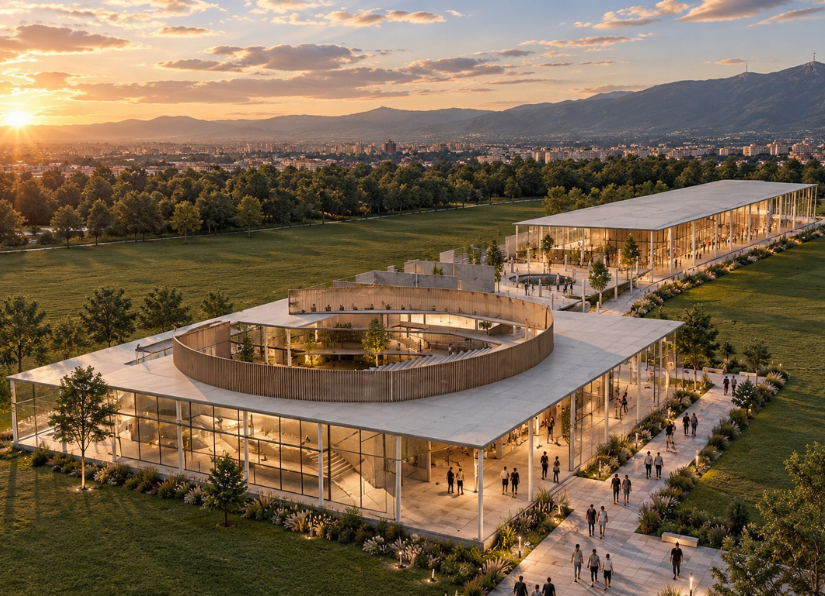

Through the arch
Signature scroll moment, pinned for about 2.5 screens. The opening under the logo's arch is a live mask. As you scroll, the letters fade, the right column slides out and the arch widens until it fills the screen, showing Aura Theatre at sunset. Every project image then sits in the same arch, so the logo carries through the whole site.
 scroll 0%The logo
scroll 0%The logo
scroll 100%Aura Theatre